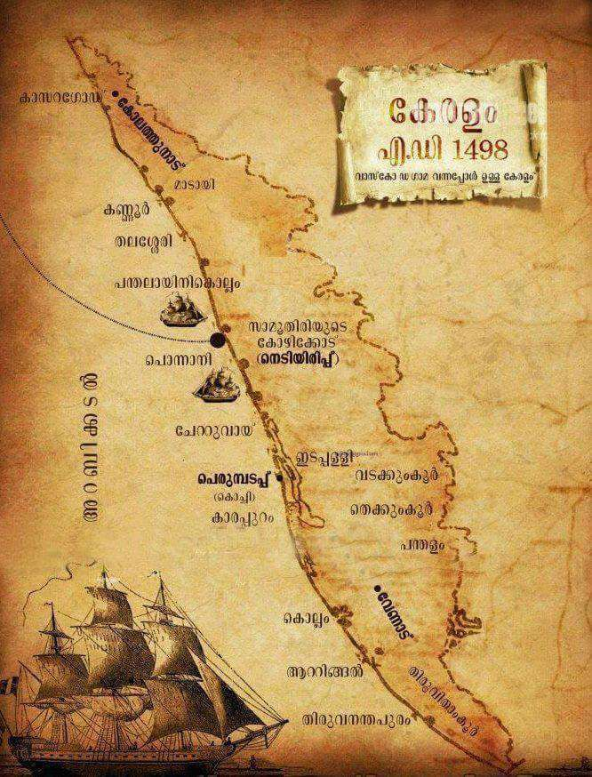

Kerala, a state on India's tropical Malabar Coast, has nearly 600km of Arabian Sea shoreline. It's known for its
palm-lined beaches and backwaters, a network of canals. Inland are the Western Ghats, mountains whose slopes support
tea, coffee and spice plantations as well as wildlife. National parks like Eravikulam and Periyar, plus Wayanad and
other sanctuaries, are home to elephants, langur monkeys and tigers.
The era of foreign intervention began in 1498, when Vasco da Gama landed near Calicut. In the 16th century the
Portuguese superseded the Arab traders and dominated the commerce of the Malabar Coast. Their attempt to establish
sovereignty was thwarted by the zamorin (hereditary ruler) of Calicut. The Dutch ousted the Portuguese in the 17th
century. Marthanda Varma ascended the Venad throne in 1729 and crushed Dutch expansionist designs at the Battle of
Kolachel 12 years later. Marthanda Varma then adopted a European mode of martial discipline and expanded the Venad
domain to encompass what became the southern state of Travancore. His alliance in 1757 with the raja of the central
state of Cochin (Kochi), against the zamorin, enabled Cochin to survive. By 1806, however, Cochin and Travancore, as
well as the Malabar Coast in the north, had become subject states under the British Madras Presidency.
Two years after India’s independence was achieved in 1947, Cochin and Travancore were united as Travancore-Cochin state.
The present state of Kerala was constituted on a linguistic basis in 1956 when the Malabar Coast and the Kasargod taluka
(administrative subdivision) of South Kanara were added to Travancore-Cochin. The southern portion of the former
Travancore-Cochin state was attached to Tamil Nadu.
